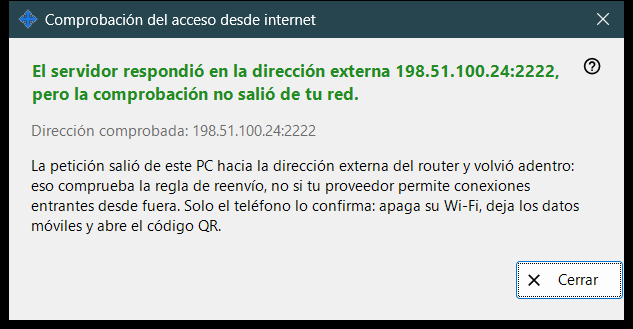
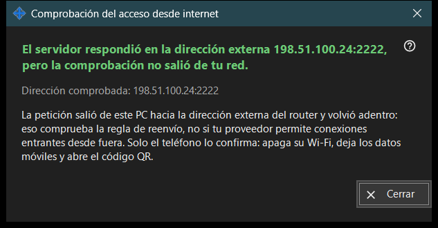

Comprobación del acceso desde internet
Para qué sirve
Comprueba desde este PC si la dirección compartida responde como un servidor SFTP. Se abre desde el botón «Comprobar el acceso desde internet» de la ventana principal y muestra la dirección comprobada, un veredicto y una explicación.


En este orden
- Abre la ventana; muestra la dirección e inicia la comprobación de inmediato.
- Espera al titular del resultado.
- Lee la línea de detalle que hay debajo.
- Si el resultado no es concluyente, repite la comprobación desde el teléfono con el Wi-Fi apagado y los datos móviles encendidos.
- Pulsa «Cerrar».
Los elementos
Dirección comprobada
«Dirección comprobada: ..» muestra el host y el puerto. Mientras la comprobación está en curso, la ventana dice «Probando ..». Si no se conoce ninguna dirección, el resultado es «Aún no hay dirección de internet.» y una dirección mal formada da «Dirección no válida.»
Veredictos
«Servidor SFTP accesible» - el puerto respondió con un banner SFTP. «Puerto abierto, pero sin respuesta SFTP» - algo escucha en el puerto, pero no es nuestro programa; comprueba que la regla del router lleve a este PC y al puerto del recurso compartido. Una conexión cerrada antes de la respuesta puede indicar el límite de conexiones; inténtalo de nuevo. La falta de respuesta desde este PC significa que el router puede bloquear desde dentro su propia dirección.
Por qué un resultado puede no ser concluyente
La solicitud sale de este PC hacia la dirección externa del router y vuelve directamente al interior, así que prueba la regla de redirección y no si el proveedor deja entrar conexiones desde fuera. Solo el teléfono puede aclararlo: apaga su Wi-Fi, deja los datos móviles encendidos y abre el código QR. Si aun así no puede conectarse, configura la redirección de puertos con el botón «Cómo configurar el acceso desde internet».
Ajustes del gestor · Ajustes de uso compartido SFTP · Ajustes del servidor de intercambio